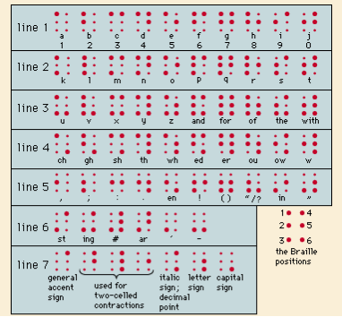

Overview of Braille
Braille is a universally accepted system of writing designed for and by blind individuals. It consists of a code of 63 characters, each formed from one to six raised dots arranged in a six-position matrix or cell. These Braille characters are embossed in lines on paper and are read by gently passing the fingers over the manuscript.
History of Braille
Invention by Louis Braille
Louis Braille, who became blind at the age of three, invented this system in 1824 while studying at the National Institute for Blind Youth in Paris. At the age of 15, Louis Braille developed a six-dot "cell" system, inspired by Charles Barbier's earlier system of raised dots, which was initially designed for nighttime battlefield communication but later adapted for people with visual and hearing impairments.
Evolution and Acceptance
Braille's six-dot system was first published in 1829, with a more comprehensive version appearing in 1837. The 63 unique dot patterns or characters within the six-dot cell were meticulously numbered by Braille to aid in identification. Despite initial resistance, the Braille system was officially adopted by the Paris school for the blind in 1854, two years after Louis Braille's death.
Structure of Braille Characters
Braille characters are arranged in a cell with six dot positions. The positions are numbered 1-2-3 on the left and 4-5-6 on the right. The first 10 letters of the Latin alphabet (a through j) are formed with dots 1, 2, 4, and 5. When a numeric indicator (dots 3, 4, 5, and 6) precedes these letters, they represent numbers. Letters k through t are formed by adding dot 3 to a through j, and additional letters and common words are formed by adding dots 3 and 6. Punctuation marks and additional letter combinations are created by placing the signs representing letters a through j in dot positions 2, 3, 5, and 6.

Expansion of Braille
Additional Codes and Notations
- Nemeth Code: Used for Braille mathematics and scientific notation, providing a way to represent complex mathematical symbols.
- Music Braille: Adapted for musical notation.
- Shorthand Braille: Used for shorthand writing.
- Braille for Different Languages: Adapted for many of the world's languages.
Writing Braille
Handwriting with a Slate and Stylus
Writing Braille by hand involves using a device called a slate, which consists of two metal plates hinged together. Paper is inserted between these plates, and a stylus is used to press against the pits in the lower plate, forming raised dots. The user writes from right to left; the sheet is then turned over to read from left to right.
Braille Writing Machines
Braille can also be produced using special machines with six keys, one for each dot in the Braille cell. The first such machine, the Hall Braille writer, was invented in 1892 by Frank H. Hall. Modern innovations include electric embossing machines and electronic computer processing for Braille production.
Innovations and Alternatives
Valentin Haüy and Early Embossed Print
Valentin Haüy was the first to emboss paper as a reading method for the blind, printing normal letters in relief. This led to various simplified systems, most of which are now obsolete except for Moon type, invented in 1845 by William Moon. Moon type retains the outlines of Roman letters and is easier to learn for individuals who became blind later in life. It remains in limited use, especially among elderly individuals in Great Britain.
Braille is a vital system that has greatly improved accessibility for blind individuals, enabling them to read and write efficiently. Its invention by Louis Braille and subsequent development into various specialized codes has made it an indispensable tool in education and communication for the visually impaired.